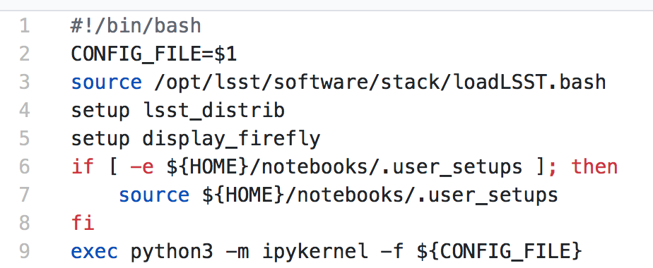

If The Data Will Not Come To The Astronomer (late 2019)...
Tucson Python Meetup, 3 December 2019
Adam Thornton
LSST
This Talk
Licensed under Creative Commons Attribution 4.0 International license (CC BY 4.0)
Overview
Large Synoptic Survey Telescope
Astronomical Analysis Methodologies
Interactive Notebook Environment
LSST
The Large Synoptic Survey Telescope
LSST is funded by the National Science Foundation and the Department of Energy, as well as a host of other generous donors, public and private.
LSST Science Goals
- LSST will perform a ten-year survey of the Southern sky: whole sky every three nights at optical and infrared wavelengths.
- Primary goal: detection of faint objects that change between visits:
- Comprehensive solar system survey.
- NEOs (> 90% 140m objects by 2040).
- Trans-Neptunian Objects (TNOs).
- Milky Way structure and stellar content.
- Transient phenomena at optical wavelengths.
- AGNs, SN1ae, neutron star/black hole mergers ...
- Dark Energy and Dark Matter.
- Only 4 percent of the mass and energy in the universe is baryonic.
- Is the Hubble Constant the same in every direction?
- Comprehensive solar system survey.
Just say "objects at every astronomical scale" and list the four. Don't describe them.
Data Collection Scale
- About 20 TB a night (roughly entire HST lifetime each week)
- Half an exabyte in the final image collection (DR11).
- Over one trillion photometric measures of celestial sources.
- Reduced catalogue (which most people will use):
- Smaller than image collection: order of 15 PB.
- Tens of billions of (complex-structured) rows in a database.
Data Scale
- The data is too big to move easily.
- Hence the need for a standardized compute deployment environment that facilitates rapid iteration through hypotheses that consider arbitrary subsets of the data.
- This is at odds with the historical method of astronomical analysis.
- We have an answer for this, but first...what is that data?
Observations of Celestial Objects
- 10-40 million AGNs (quasars).
- 300,000 supernovae a year.
- Current detection rate is about 7,000 supernovae per year.
- A supernova explodes in a Milky-Way-scale galaxy once every few hundred years.
- One goes off somewhere in the observable universe roughly every ten seconds.
- Roughly 20 billion galaxies.
- Roughly 20 billion stars.
- So everyone could have about three of each.
LSST Resources
Depth
Deepest ground-based survey telescope
- Naked eye: 6 magnitude.
- Single-visit (red): 24.7 magnitude.
- 10-year stacked depth (red): 27.5 magnitude.
- 30/400 million times fainter than naked eye.
However...
- Not the deepest telescope.
- Hubble Space Telescope: 31.
- James Webb Space Telescope: 34 magnitude (expected)
Field of view
Depth isn't everything.
- Humongous FoV: 9.62 degrees 2.
- 40 full moons; roughly a CD held at arm's length.
- JWST, by contrast, is 9.7 arcmin 2, so roughly 1/3600 of LSST.
- This lets us cover the whole Southern sky in three nights.
- Image by Nate Lust, based on data from the HSC collaboration.
Camera
- Focal plane array: 3.2 Gpixels.
- Nadine Kurita, former Project Manager for Camera, for scale.
- 189 4K x 4K sensors (roughly 400 4K monitors).
- 18 bits per pixel.
- Each exposure 15 seconds.
- Two exposures per visit (to do cosmic-ray/atmospheric transient rejection, plus a bit of science).
LSST Mirror Design
- 8.4m, but that combines primary and tertiary.
- Effective collection area equivalent to 5.6m mirror.
- Not the largest primary telescope mirror, but...
- The primary/tertiary mirror is the largest monolithic piece of glass ever fabricated.
Larger mirrors are generally segmented rather than monolithic.
Cost
- Observatory: about $500 million (all numbers in 2013 dollars).
- Camera: about $165 million.
- Primary/tertiary mirror: about $25 million.
- Operations:
- A little more than a dollar a second.
- On the order of $100,000 a day.
- Roughly $35 million a year.
Site
Astronomical Status Quo
Historically, astronomical research has been done with:
- Desktop or laptop computer:
- Usually pretty beefy by the standards of the day.
- Astronomical software:
- Usually written by the researcher to address a particular hypothesis.
- Usually written by a single astronomer, rather than a team of software engineers.
- Maybe written by many astronomers, which is arguably worse.
- Downloaded data stored locally.
Obvious Failure Modes
- Local machine: age, security, IT practices.
- Software: applicability, software engineering.
- Data: scale, backups, DR.
Data
- Rights: already extremely broad.
- Roughly half the astronomical community.
- Finding reviewers for the overview paper has been hard.
- Scale: most will never be directly examined by a human.
A Different Way To Do Astronomy
- The analysis, not the data, is the professionally-valuable part.
- How do we facilitate rapid iteration of analysis?
- Quickly try a lot of hypotheses and discard unpromising ones.
- Once you have one you like, turn it loose on a lot of data.
Interactive vs. Batch
We expect that a researcher will use the "interactive notebook aspect of the LSST Science Platform" (by which we mean JupyterLab, or perhaps its successors) to perform this iteration. It is a rapid prototyping tool with the following characteristics:
- Relatively tiny subset of the data: a few terabytes, probably less.
- The real analysis will be submitted to a batch system to work on petabyte-scale data.
- We don't (and can't) know what subset we want in advance.
What does this imply?
- It's not really about speed of data access or computation.
- Access to completely arbitrary subsets of the data, however, is absolutely crucial.
- Bring your code to the data, not the other way around.
What Do We Want?
Let's imagine a better world:
- You don't need to spend hours-to-weeks setting up the software environment.
- In fact, all that's needed for analysis is a web browser. Compute and data storage happen somewhere else.
- You have a single login to manage your access to the environment.
- You don't need to pick a data subset that will fit on your laptop or your desktop NAS.
- The analysis is running on professionally-maintained machines in a real datacenter somewhere that it isn't your problem.
Community Acceptance
The trickiest design goal is that we cannot make any user's life significantly worse than the status quo.
Obviously the current system isn't ideal:
- Large, complex, bespoke analysis stack.
- Hugely complicated installation and configuration.
- Enormous amounts of technical debt.
But...it also gets the job done. The analysis software encodes literally hundreds, perhaps thousands, of astronomer-years of work on difficult problems. It is inherently complex.
We have to please several different groups of users.
User Community
Analysis Pipeline Consumers
We have this one covered. If you want to use the existing toolset to analyze collected data, and you're not coming to the project with a lot of prior experience or actively developing the pipeline software, we're delivering a far superior way to get your work done than the prior art.
User Community
Analysis Pipeline Developers
The LSST stack is big. No one works on the whole thing. The way it's developed is that someone takes a version (either a release version, approximately every 6 months, or a weekly build) and works on their own little corner of it in a conda or pip environment. We must support that.
User Community
Established Astronomers
The people who have tenure and bring in the grants already have a workflow that works well for them. Sure, it's based on FORTRAN IV and FITS files, but they've gotten really, really good at it.
In practice: you need a Terminal window that gives you shell access to something that looks like a Unix system. We mimic a system on which you have an unprivileged account, which is very familiar to academic users.
There is something of an Uncanny Valley problem here.
User Community
Security; generally, Operational Support

It's a fair cop, but if if we make it look like an existing multi-user system, where the user doesn't have root or sudo within the container, and has write access only to ${HOME} and scratch space but not the OS, and furthermore we show that we can completely characterize the container's contents, it's a much easier sell.
- Image by Abbey Yacoe.
The Big Reveal
(Not actually a surprise to anyone here.)
Kubernetes + JupyterHub + JupyterLab
- Kubernetes: it clearly won. Google, Amazon, and Azure all offer managed Kubernetes infrastructure.
- JupyterLab: the UX is much better than the classic notebook. Multiple panes within a single browser tab, including terminal sessions, is a tremendous feature, giving users basically an IDE.
- JupyterHub: the obvious choice for access control and resource allocation brokering. Authenticator and Spawner subclasses let us do some really nifty things, which you will see.
Banek et al., ADASS 2019: Why is the LSST Science Platform built on Kubernetes?
Abstraction and Layering
- Virtualization lets you stop caring about the specifics of your hardware.
- Containerization lets you stop caring about managing the OS/distribution layer.
- Kubernetes lets you stop caring about managing the inter-component networking of your application and container lifecycle management.
The Long Bet
Kubernetes will save astronomy.
- It's the first time we've had a functional abstraction layer that allows you to specify scalable architectural designs.
- This lets you create complex multicomponent applications that will run on any suitable cluster, with built-in lifecycle management.
- And because it's modular, you can use best-practice patterns for all the infrastructure and only really care about managing the analysis stack that is your actual application.
Modularity
- Separate plumbing from application.
- Provide a clear way to replace the value-added part (for us: the LSST Science Pipeline) with your own payload.
- Retain the robust infrastructure with component lifecycle management and automated resource allocation.
This lets you both have your cake and eat it. You get to use whatever insanely complex analysis framework you want wrapped inside a general-purpose, self-healing application architecture.
Presenting the Analysis Component
Replacing the payload is a matter of replacing the JupyterLab container that is spawned for the user. All you need is:
- A container that will start a JupyterLab server.
- Some way to wrap your analysis pipeline up as a Jupyter kernel.
I would be flabbergasted if this approach were not portable to other physical sciences and very possibly to other (and very general) analytic problem spaces.
Parallelization
- There should be some way for users to run jobs larger than a single
container, but not real-batch-system sized (dozens of CPU cores, not
thousands).
- We use Dask.
- Could use Vaex.
- Looking into Argo Workflows for pipelines and headless notebook execution (very handy for CI).
- You also need a reasonable interface to your real at-scale workflow system.
- By the end of the survey in 2032, things that are now "real batch" will be totally feasible in a Dask-like environment. Plan for that.
Resource Management
- The Hub needs Kubernetes cluster-level privileges for cross-namespace games.
- Spawn each user into its own namespace, with a quota restricting CPU
and memory available.
- Could also use to regulate access to GPUs and other enumerated resources.
- Hierarchical namespaces, or at least regex-based namespace restrictions, would make this a lot easier in a shared-tenancy environment.
- Our general assumption thus far has been that the LSP is the only tenant in the cluster.
Scaling
Step one: Add more nodes to your cluster. (Or take some away.)
- In a public cloud, this is really, really easy. Perhaps even automated.
Step two: Change the replica counts in your deployments.
- You can turn this into a closed-loop automated system by monitoring your load too.
There is no step three.
Contributing
The Jupyter community is awesome.
JupyterLab has stabilized a lot. 1.0.x is current, and 2.0 is aimed at New Year 2020.
- Sometimes underdocumented.
- Documentation is not very discoverable.
- Everyone is busy working on their own projects.
- The best way to proceed is to implement something and then wait for the gasps of horror from the people who are experts, then do what they say.
LSST JupyterLab Implementation
Overview
SQR-018 describes the architecture.
The complete implementation is available at GitHub.

Deployment
Just use Helm
- We had an overly complex hand-rolled deployment framework.
- We also tried Terraform.
- Christine Banek (cbanek@lsst.org) put together Helm Charts and it's the easiest way to go.
- Probably, you can use Zero to Jupyterhub instead.
Problem 1: Authentication
Authentication is annoying and hard. Let's outsource it.
- OAuth2 is a thing, and JupyterHub supports it well; we can do GitHub or CILogon with the NCSA ID provider (adding more is straightforward, and NCSA lets us associate external accounts).
- However, we don't want to make each LSST Science Platform component
implement its own auth.
- OAuth2 Proxy implementing JWT. Not outside-of-LSST-portable at the moment; passes auth information around inside HTTP headers.
- Expiry becomes trickier.
- We need authorization as well. Even when we know who you are, you might not get to use the system
![[cilogon_screenshot]](images/screenshots/cilogon.png){kind=link}
Problem 2: Authorization
How do we restrict beyond "has a GitHub/NCSA account"?
Both have concepts of group memberships.
- OAuth2 scopes allow us to attach capabilities to tokens; for instance, "enumerate a user's groups." That's what you need to determine if you are in the LSST group.
- If using JWT, pack that info into JWT or have a secondary call to figure it out.
![[auth_screenshot]](images/screenshots/denylist.png){kind=link}
Problem 3: Global User Consistency
GitHub's user account ID fits into a 32-bit value. Each GitHub Organization also has an ID. There are our UID/GID maps.
CILogon + NCSA IDP does something similar.
Now you have globally consistent users and groups.
![[uid_screenshot]](images/screenshots/uid-gids.png){kind=link}
Problem 4: Persistent Storage
We have globally unique UIDs and GIDs.
- We mount /home and whatever other filesystems we want.
- I built a helper method to read this from a document at Lab spawn time for ease of modification.
- Data access and sharing immediately collapses to the long-solved problem of Unix filesystem access.
- We use NFS v4, because it's easy.
- We point to an external NFS server, but you can stand one up within Kubernetes if you prefer.
- Whatever we eventually pick, it will be exposed as a POSIX filesystem to our users.
![[filesystem_screenshot]](images/screenshots/filesystem.png){kind=link}
Problem 5: User Access Restriction
Don't give your users sudo. Don't even give them passwords.
You already have globally-consistent UID and GIDs. Use a semiprivileged user to provision user with correct name/UID/GIDs via sudo at container startup. Start Jupyterlab as that user.
You're done.
Users can still override bits of the stack with pip install --user.
- Put something on the options form that lets the user clear $HOME/.local. Trust me on this.
![[sudo_screenshot]](images/screenshots/nosudo.png){kind=link}
Problem 6: User Resource Restriction
If you spawn users into individual namespaces:
- Quota the namespaces and let Kubernetes do the enforcement.
- A document-driven quota manager can let you do different quotas by user or group.
![[quota_screenshot]](images/screenshots/namespace_quota.png){kind=link}
Problem 7: Auditability and Maintainability
It's a container. You know how you built it (at least if you use particular package versions, not latest). It's repeatable and immutable. Have a bleeding-edge build, that floats, and an occasionally-updated-from-that version that pins all OS-level, Python-level, and JupyterLab-Extension-level components.
We look for regressions in the stack by creating an options form that scans our repository and presents a menu of recent builds. This also allows users to choose their risk tolerance.
![[options_screenshot]](images/screenshots/options.png){kind=link}
Problem 8: Startup Time and User Frustration
Our images are huge and take on the order of 15 minutes to pull.
- "So don't do that."
- Unless your analysis stack is inherently gargantuan...
- ...so we pre-pull them.
Within, say, an hour and a half of building (which is usually in the middle of the night) each image is available on each node and therefore starts quickly.
![[prepuller_screenshot]](images/screenshots/prepuller.png){kind=link}